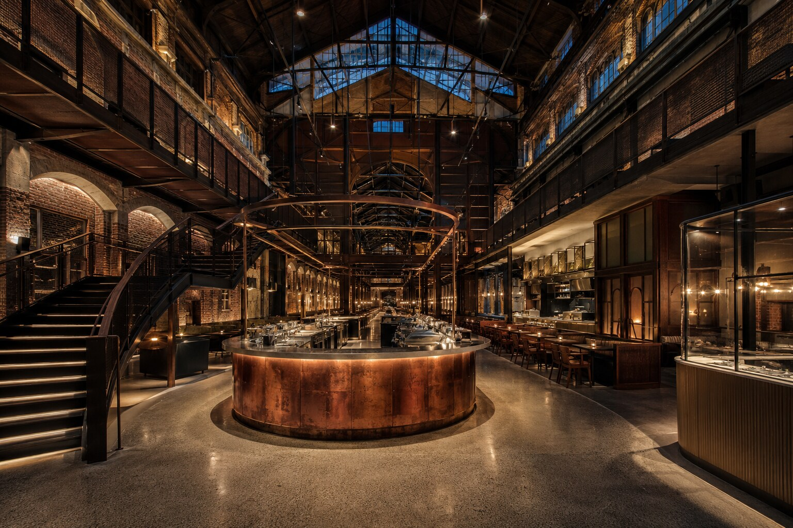

SELECTED PUBLIC / 13
백양 시민도서관BAEKYANG CIVIC LIBRARY
배움과 휴식, 지역 커뮤니티를 하나의 밝은 아트리움에 담은 시민도서관.
VIEW PROJECT13PROJECT OVERVIEW
배움과 휴식이 층마다 자연스럽게 교차하다.
밝은 오크 격자 지붕 아래 계단식 열람 공간과 정원, 여러 층의 서가를 배치했습니다. 어린이 도서관과 강당, 카페, 조용한 열람실은 중앙 아트리움을 공유하며 서로의 활동을 부드럽게 연결합니다.
PROJECT GALLERY
공간의 장면들
